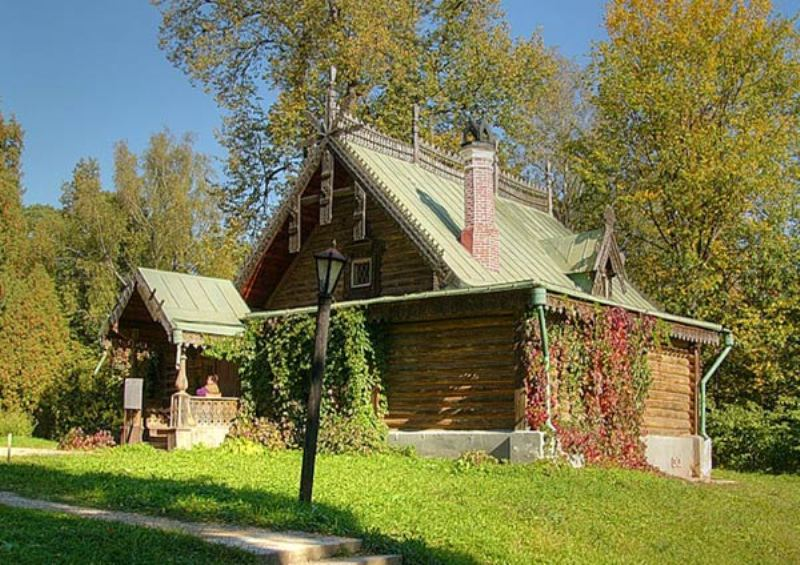

|  | Министерство культуры Российской Федерации Портал Культура.рф Проект «Образы России» |
Le musée-réserve naturel Abramtsevo
LE STUDIO-ATELIER

L’atelier pour s’occuper de sculpture a été construite en 1873 selon le projet de V.А. Gartman sur le pavillon démonté d’Aksakov. Le bâtiment est actuellement un monument rare conservé exécuté selon le projet d’un des architectes les plus connus du «style russe». Les façades sont bien décorées du bois sculpté en treillis propre pour les bâtiments de V.A.Gartman. Selon l’évaluation de l’historien des arts V.V. Stasov l’architecture du «style russe» est l’architecture «principale, la plus douée, la plus diverse, la plus surprenante et la plus fine de toutes nos architectures. Ici un vrai esprit russe est beaucoup plus présent que dans tout l’autre que nos architectes ont fait … Ici ont été utilisés de vrais motifs architecturaux russes, nationaux qui n’existaient pas avant, créés par le peuple russe lui-même dans ses isbas, sa vaisselle, ses ustensiles, des centaines objets de ménage …».
Dans cet atelier ont fait de la sculpture S.I. Mamontov, М. М. Antokolskyi, V. М. Vasnetsov, I. Е. Repin et d’autres. Les pièces ont été utilisées comme des locaux habitables pour les invités arrivés à Abramtsevo. Ici sont restés V. А. Serov, I. S. Ostropukhov, P.P. Kontchalovskyi et d’autres.